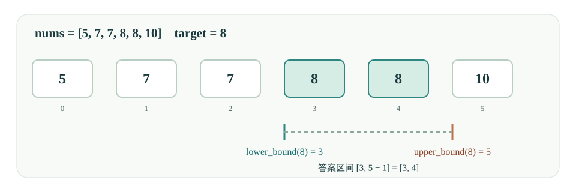
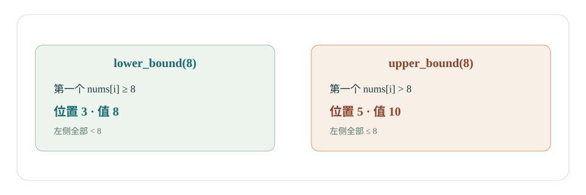
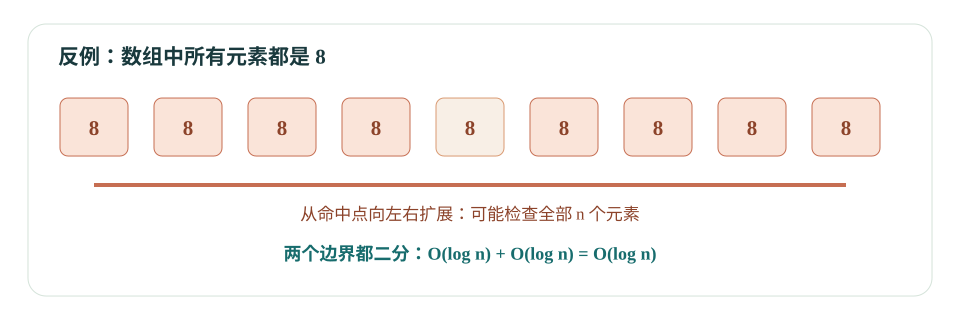

LeetCode 34 · 在排序数组中查找元素的第一个和最后一个位置
两个边界问题：第一个 ≥ target 与第一个 > target。
中等 Medium17 分钟Lower / Upper Bound01 · 从“找到一个”升级到“找到边界”
给定一个非递减数组 nums 和目标值 target，返回目标值第一次与最后一次出现的下标；如果不存在则返回 [-1,-1]。要求 O(log n) 时间。
普通二分找到任意一个 8 后，并不知道它左边是否还有 8、右边是否还有 8。向两侧逐个扩展虽然简单，但重复值可能覆盖整个数组，最坏 O(n)。

02 · 两个边界：lower bound 与 upper bound
使用半开区间 [lo, hi)：lo 可能取到，hi 不包含在搜索区间中。初始化 [0,n)，因此 hi=n 可以作为“所有元素都满足条件”的哨兵边界。
- lower_bound(target)：第一个 nums[i] ≥ target 的位置。若 nums[mid] < target，答案只能在右边，lo=mid+1；否则 hi=mid。
- upper_bound(target)：第一个 nums[i] > target 的位置。若 nums[mid] ≤ target，lo=mid+1；否则 hi=mid。
lower bound 搜索中，lo 左边全部小于 target，hi 及其右侧全部大于等于 target。upper bound 则把分界条件改成“大于 target”。

03 · 逐步执行
对 [5,7,7,8,8,10] 查找 8。先找 lower bound，再找 upper bound，最后将右端点转成 upper−1。
先求 lower_bound：第一个满足 nums[i] >= 8 的位置。用半开区间 [lo,hi) 初始化 [0,6)。
lower_bound · [lo,hi)=[0,6)
04 · 为什么返回的是完整范围？
lower bound 返回第一个大于等于 target 的位置 L。若 L=n 或 nums[L] 不等于 target，数组中没有 target，返回 [-1,-1]。
否则 L 就是第一个 target：它左边的值都小于 target，而当前位置等于 target。upper bound 返回第一个严格大于 target 的位置 R，因此 R 左边所有值都小于等于 target，且 R 之前最后一个等于 target 的位置是 R−1。于是答案为 [L,R−1]。
05 · Python 参考实现
class Solution:
def searchRange(self, nums: list[int], target: int) -> list[int]:
def lower_bound() -> int:
lo, hi = 0, len(nums)
while lo < hi:
mid = lo + (hi - lo) // 2
if nums[mid] < target:
lo = mid + 1
else:
hi = mid
return lo
def upper_bound() -> int:
lo, hi = 0, len(nums)
while lo < hi:
mid = lo + (hi - lo) // 2
if nums[mid] <= target:
lo = mid + 1
else:
hi = mid
return lo
left = lower_bound()
if left == len(nums) or nums[left] != target:
return [-1, -1]
return [left, upper_bound() - 1]
| 操作 | 时间 | 空间 |
|---|---|---|
| lower bound | O(log n) | O(1) |
| upper bound | O(log n) | O(1) |
| 合计 | 2 × O(log n) = O(log n) | O(1) |
06 · 不要二分一次后再线性扩展
如果数组里有十万个 8，普通二分很快就能找到其中一个 8，但从它向左、向右扩展可能要检查近十万个位置，整体退化为 O(n)。两个边界各做一次二分，仍然是 O(log n)。

记住：lower bound 找的是“第一个满足条件的位置”，upper bound 找的是“第一个不再满足条件的位置”。这是把二分推广到答案空间、容量限制和单调判定的基础。